很久没打ctf了, 正好碰见周末有一点空, 就看了一下d3ctf和windows相关的题目
locked-door
加的是vmp的壳子, 需要调试的话直接用TitanHide - > https://github.com/mrexodia/TitanHide就可以调试起来, download后自行加个签名即可, 发现题目有两个bin文件, 直接可以得到的思路是先dump, 因为一定要读取文件一定会调用readfile, 所以可以根据回溯找到关键位置进行调试
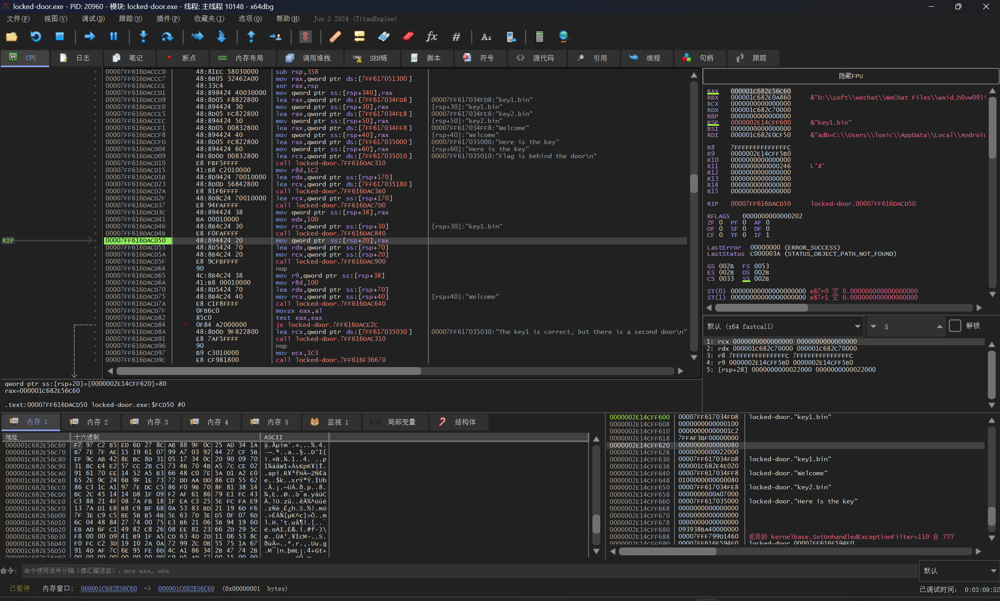
通过readfile回溯已经找到了关键位置, 然后用过函数特征入口点来dump, 正常编程的也就那几个软件, 这个问题在之前我发过看雪的文章可以看一下, 可以看到这里很像入口点了, 看一个正常vs编译出来的程序
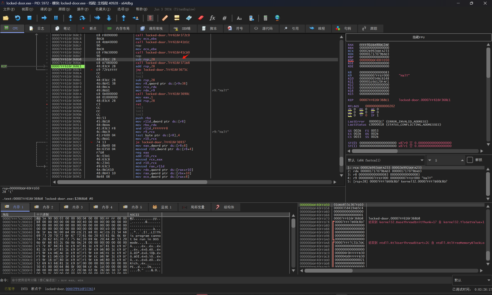
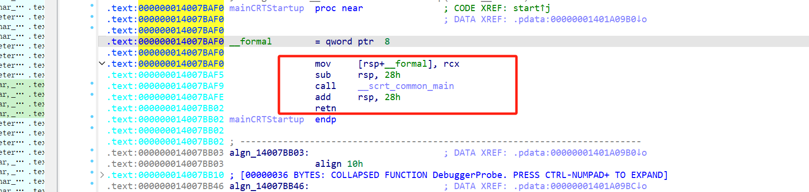
比较后可以看很像入口点的位置, 直接dump设置oep, 这样dump后的逻辑就很清晰了
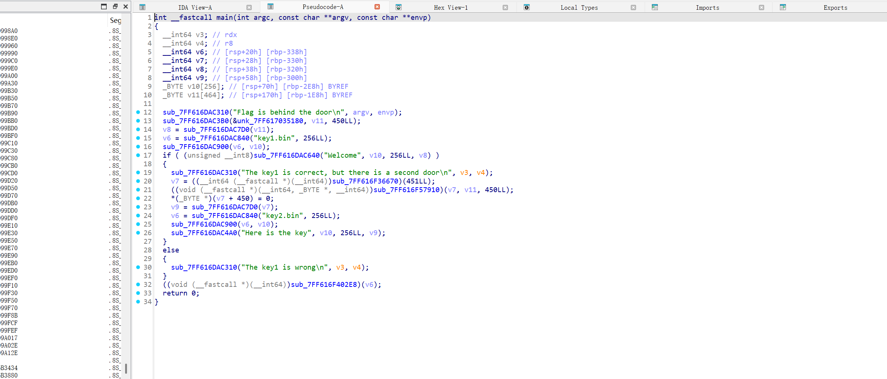
可以看到一个算法, 本身程序对他们的校验的算法是一样的
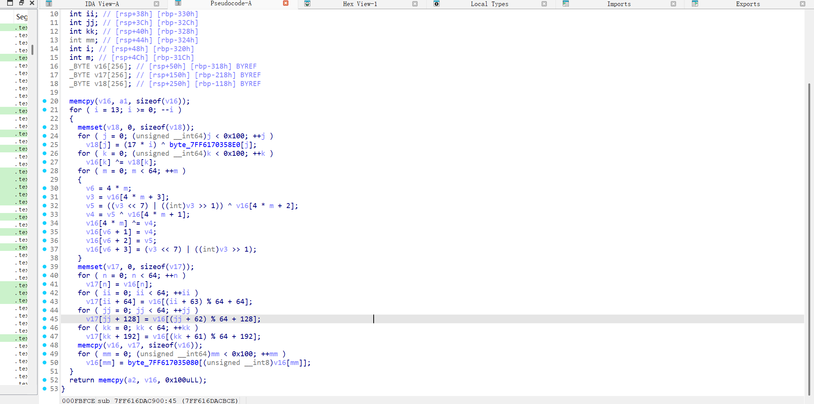
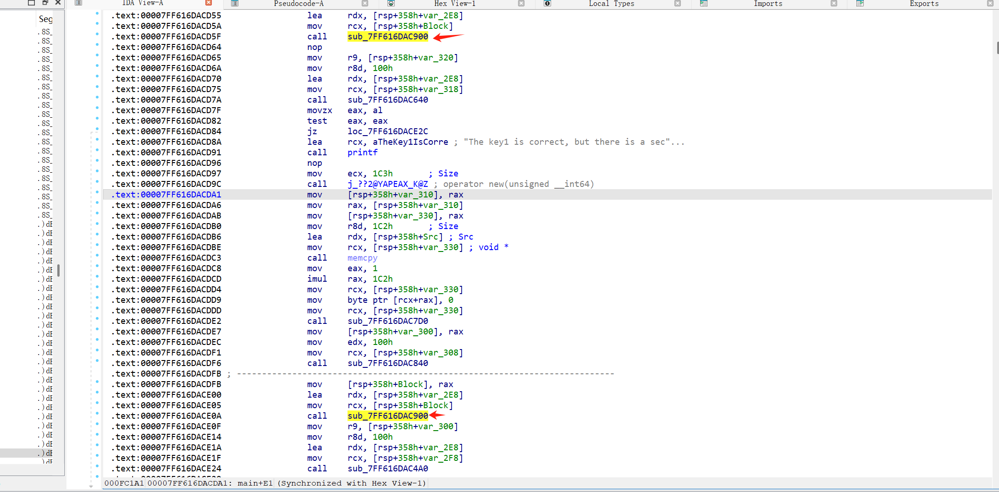
加密完的数据进行evp的校验
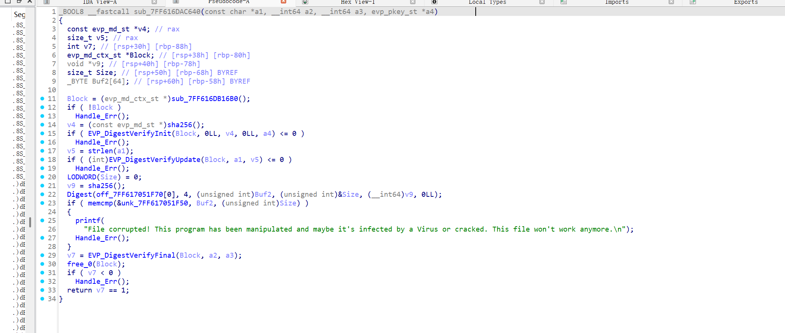
校验过了后才可以走到正确的流程, 参数是key+加密的bin里的data, 那直接替换一下, 就可以得到flag了
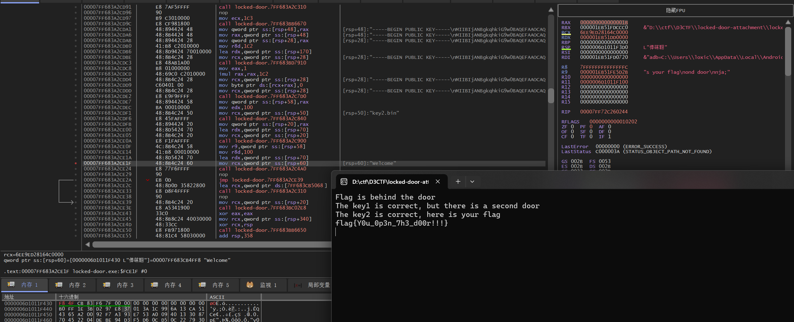
d3rpg-revenge
这是一个游戏, 正好我是一个游戏安全的从业者, 直接打开ce开始干, 进入一个房间后, 他让我输入密码, 那么可以对密码的位置进行访问断点, 可以看到可以被很好的断下来
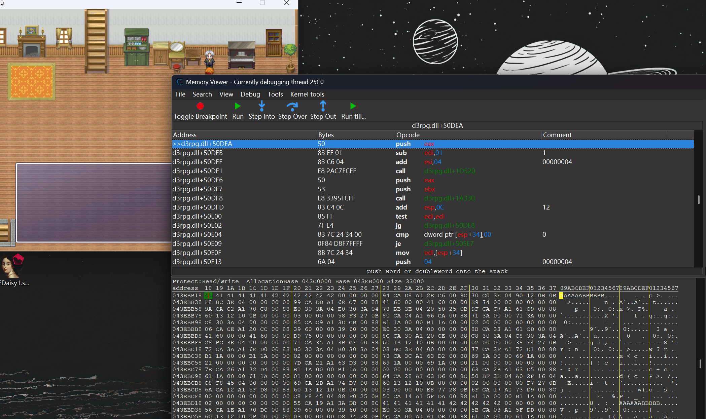
d3rpg.dll+50DEA这里的地址, 这个字符串很可疑, 去搜一下
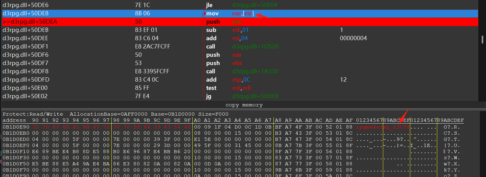
module Scene_RPG
class Secret_Class
DELTA = | (($de1ta + 1) * 0xf0000000)
def initialize(new_key)
@key = str_to_longs(new_key)
if @key.length < 4
@key.length.upto(4) { |i| @key[i] = 0 }
end
end
def self.str_to_longs(s, include_count = false)
s = s.dup
length = s.length
((4 - s.length % 4) & 3).times { s << "\0" }
unpacked = s.unpack('V*').collect { |n| int32 n }
unpacked << length if include_count
unpacked
end
def str_to_longs(s, include_count = false)
self.class.str_to_longs s, include_count
end
def self.longs_to_str(l, count_included = false)
s = l.pack('V*')
s = s[0...(l[-1])] if count_included
s
end
def longs_to_str(l, count_included = false)
self.class.longs_to_str l, count_included
end
def self.int32(n)
n -= 4_294_967_296 while (n >= 2_147_483_648)
n += 4_294_967_296 while (n <= -2_147_483_648)
n.to_i
end
def int32(n)
self.class.int32 n
end
def mx(z, y, sum, p, e)
int32(
((z >> 5 & 0x07FFFFFF) ^ (y << 2)) +
((y >> 3 & 0x1FFFFFFF) ^ (z << 4))
) ^ int32((sum ^ y) + (@key[(p & 3) ^ e] ^ z))
end
def self.encrypt(key, plaintext)
self.new(key).encrypt(plaintext)
end
def encrypt(plaintext)
return '' if plaintext.length == 0
v = str_to_longs(plaintext, true)
v[1] = 0 if v.length == 1
n = v.length - 1
z = v[n]
y = v[0]
q = (6 + 52 / (n + 1)).floor
sum = $de1ta * DELTA
p = 0
while(0 <= (q -= 1)) do
sum = int32(sum + DELTA)
e = sum >> 2 & 3
n.times do |i|
y = v[i + 1];
z = v[i] = int32(v[i] + mx(z, y, sum, i, e))
p = i
end
p += 1
y = v[0];
z = v[p] = int32(v[p] + mx(z, y, sum, p, e))
end
longs_to_str(v).unpack('a*').pack('m').delete("\n")
end
def self.decrypt(key, ciphertext)
self.new(key).decrypt(ciphertext)
end
end
end
def validate_flag(input_flag)
c_flag = input_flag + "\0"
result = $check_flag.call(c_flag)
result == 1
end
def check
flag = $game_party.actors[0].name
key = Scene_RPG::Secret_Class.new('rpgmakerxp_D3CTF')
cyphertext = key.encrypt(flag)
if validate_flag(cyphertext)
$game_variables[1] = 100
else
$game_variables[1] = 0
end
end
def check1
flag = $game_party.actors[0].name
if flag == "ImPsw"
$game_variables[2] = 100
else
$game_variables[2] = 0
end
end
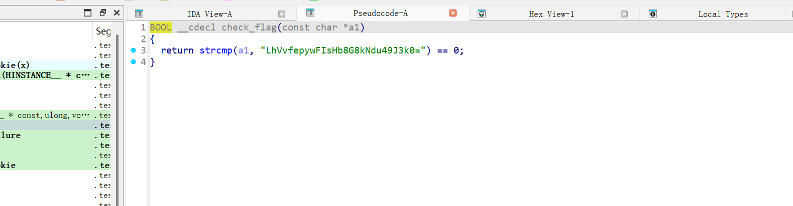
直接写python解密即可
from regadgets import *
data = decode_b64('LhVvfepywFIsHb8G8kNdu49J3k0=')
key = b'rpgmakerxp_D3CTF'
#xxtea decode
data = xxtea_decrypt(data, key, delta=0xf1919810)
print(data)
#Y0u_R_RPG_M4st3r